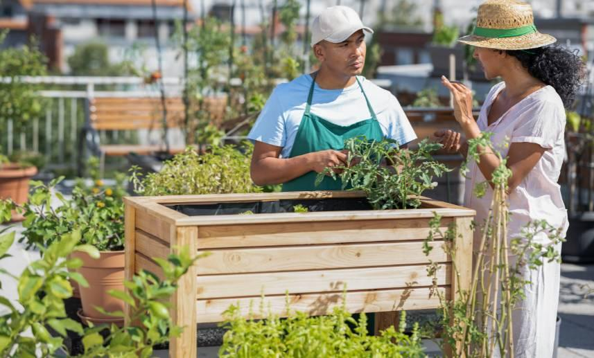
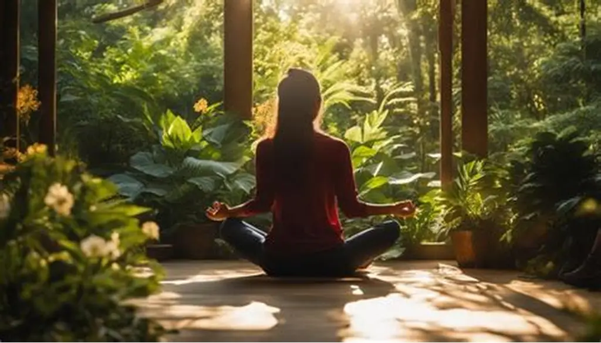
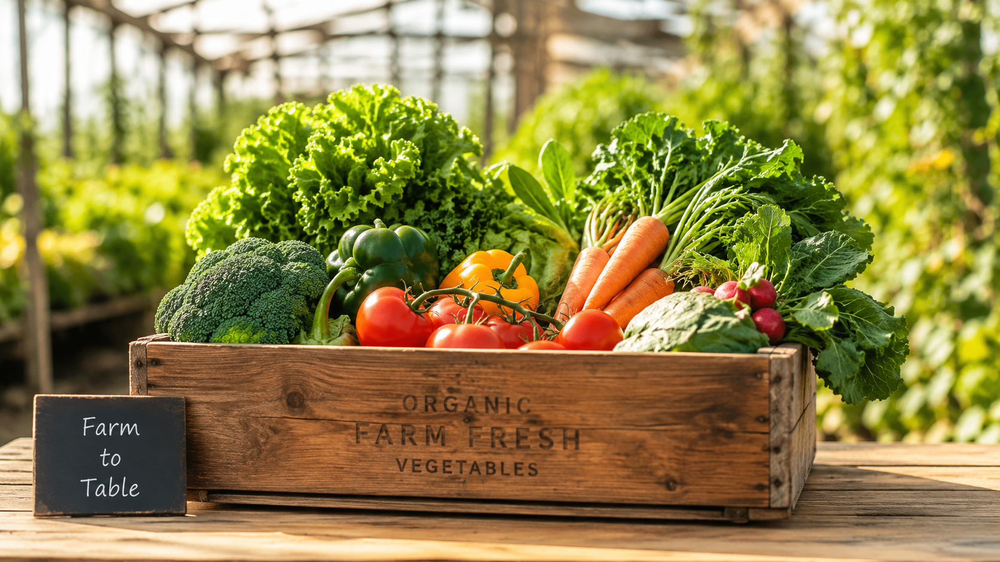

Es un orgullo para nosotros, haber plantado mas de 5.000 arboles gracias a los fondos alcanzados con este proyecto. Gracias a todos nuestros clientes y colaboradores por permitirnos sembrar un granito de arena extra.
EcoMarket nació al darnos cuenta de que el mercado actual está saturado de productos
ultra-procesados, llenos de químicos artificiales que dañan la salud y procesos que
agotan nuestro planeta
Nos propusimos cambiar las reglas del juego. Decidimos crear un espacio donde comer
sano sea fácil y transparente. Cada producto en nuestro catálogo es seleccionado
meticulosamente bajo una premisa simple: si no le hace bien a tu cuerpo o al entorno,
no tiene espacio en nuestras estanterías.


Nos despedimos de los químicos innecesarios. Te ofrecemos alimentos en su estado más puro y real para potenciar tu bienestar diario.

Creemos en la honestidad. En EcoMarket sabes exactamente qué contiene lo que consumes y el impacto positivo que generas al elegirlo.
Apoyamos métodos de cultivo que respetan los ciclos de la tierra, reducen el uso de plásticos y protegen la biodiversidad.